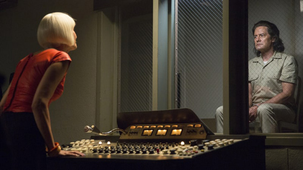

Jailbreaks, secret notes and an eerie non sequitur set to 'Green Onions' characterize a more-unnerving-than-usual episode.

Is your heart still pounding? Culminating in the escape of Agent Dale Cooper's doppelganger, tonight's Twin Peaks was tense and terrifying enough to leave you freaked out long after "Sleep Walk" on the Double R's jukebox brought the credits to a close. But before we talk about all that, let's take a look at the dogs that didn't bark. Throughout the episode, co-creators David Lynch and Mark Frost utilize the show's usual ingredients for creating supernatural suspense. The results they produce this time out, however, are completely different.
The hour opens with a shot of local legal-weed magnate Jerry Horne, lost and disoriented in the woods. He calls his brother Ben on the phone (arguably the main vector for horror during this season) but can barely get a word out. Eventually he shouts that someone stole his car – a laugh line, given what we thought might be on its way out of those woods to destroy him – but he continues to react to his big bro in a strange, almost dissociative way. It takes him screaming "I think I'm high!" at the top of his lungs for the fear to stop gnawing at us and the laughter to begin. (At least until you note that the scene is a weird anticipatory echo of Dougie Jones' own stolen-car conversation later in the episode.)
Ben gets a taste of this technique all his own later in the episode, when he and his coworker Beverly find themselves alone around closing time in the Great Northern. Their scene together begins, well, without them at all. As the camera slowly pans around in a circle, showing us the hotel's wooden decor, a high ambient tone grows louder and louder. Slow camera movement, strange sonic cues – a surefire signal something strange is about to happen, right?
Not so fast. It turns out the duo can hear it too; that it's been going on for a week or so; and that they can't locate its point of origin no matter how hard they try. The fact that the note is more pretty than creepy lends a certain sensual oomph to the scene, which seems to show a potential romance in the making between the two characters. It's a far cry from the Black Lodge visit you might have expected.
Yes, the events conspire to snuff out the sparks somewhat. Beverly has a sick husband at home who harbors a grudge that she spends so much time at work; she resents his his bad attitude and his illness for forcing her back into the job market. The good Mr. Horne, meanwhile, is forced to dodge a somewhat … awkward conversation about his sordid past when Beverly produces Cooper's old hotel-room key, mailed back to the hotel by Dougie Jones's sex-worker pal a few weeks ago. "Who's Agent Cooper?" she asks, as he reminisces. "Who's Laura Palmer?" "Oh, that, my dear, is a long story," he responds. To be fair, "Oh, she's the underage girl I fell in love with while she was working in a prostitution ring I helped bankroll before she was murdered by my demonically possessed lawyer, who was also her father" is a bit of a mouthful.
The third pseudo-ominous scene, and we're gonna guess it's the one that gets people talking, takes place in the Bang Bang Bar, a.k.a. the Road House, a.k.a. the place where we just sit around and watch a guy sweep up debris from the floor for nearly the entire duration of "Green Onions" by Booker T. and the MGs. Why? The answer that springs to mind is "why the hell not," and hey, that's perfectly valid. But the phone conversation that ends the scene, in which Jean-Michel Renault (no, not the long-dead sleazebag Jacques, but one of his equally gross relatives) rants and raves about the 15-year-old girls he pimped out to an unhappy client, provides a different answer. What you've got here is the banality of evil: A dude who can sit around twiddling his thumbs to an old R&B classic, then pick up the phone and crack jokes about statutory rape. As Jacques would say in a thick French-Canadian accent, "Bite ze bullet, baby."
Which is not to say that all the evil on display this week is banal – far from it, in fact. In the town of Buckland, Navy Lieutenant Cynthia Knox arrives to discover the decapitated, impossibly young corpse of the long-missing Major Garland Briggs. While she calls her superior Colonel Davis (Ernie Hudson!) to tell him the news, a coal-black … entity casually walks up the hall behind her, radiating menace along with the discordant score. When the thing passes her by instead of killing them all, we feel as lucky as she ought to.
Meanwhile, in South Dakota, an all-star team of current and former FBI personnel – Gordon Cole, Albert Rosenfield, Tammy Preston and the legendary woman on the other end of Coop's tape-recorded conversations Diane – pay a visit to Dale's doppelganger. Kyle McLachlan is dead-eyed and absolutely frightening in this role; Laura Dern's ensuing cry-face meltdown, when her character realizes this person is not the man she knew, says it all. She's so emotionally raw that Gordon is unable to fully console her, though considering the raw fury she's shown to every Fed she's met ("Fuck you, Gordon") you can't really blame him for being afraid to get too close to the flame. But there's a price to be paid for the team's reluctance to push the false Cooper too hard: He blackmails the warden into setting him free with the details of an apparent murder.
The hope we have to cling to is that there are enough ties to the past, and the noble people who reside there, to put the world to rights again. The real Coop instinctively saves himself and his "wife" Janey-E from crazed assassin Ike the Spike. Deputy Hawk and Sheriff Frank Truman uncover the riddle of Laura Palmer's missing diary pages. Deputy Andy may be too kind by half, but he's at least on the trail of Richard Horne, the killer of that little boy last week. And good-hearted Doc Hayward (Warren Frost, the late father of co-creator and co-writer Mark Frost) puts in a last appearance via Skype in sequence in a powerful (and sometimes very funny) sequence. Twin Peaks is playful enough to subvert our expectations, skillful enough to exceed them and thoughtful enough to make us believe something "damn good" will happen, no matter how much horror we face.